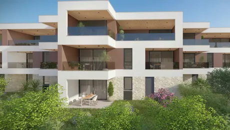
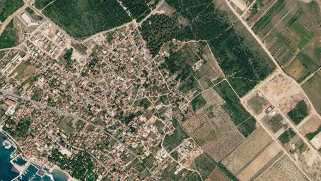
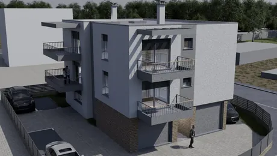
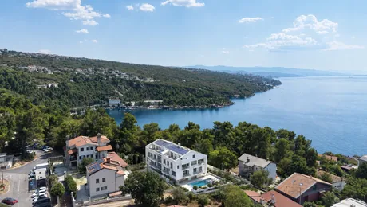
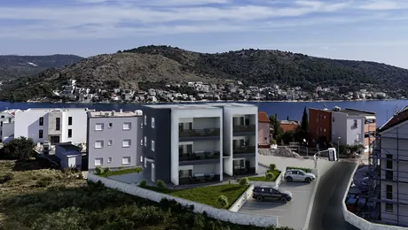

Find your home
We recommend
The best from Eurovilla offer
Explore the offer

Istria, Pula – Modern Residential Complex – Penthouse with Garage
Residential Development in Pula We present a modern residential development in Pula, designed with a strong focus on construction quality, functionality and everyday comfort. The residential complex comprises several contemporary buildings, carefully designed to provide residents with a...

Sveti Filip i Jakov – Investment Building Land, 10 Plots with a Total Area of 20,256 m²
In the area of Sveti Filip i Jakov, in a peaceful and promising location approximately 1,300 metres from the sea and maintained beaches, there is a larger land complex with a total area of 20,256 m², consisting of ten separate building plots of approximately equal size. The plots are regular and...

Istria, Pula – New Development with 5 Apartments
Just outside the center of Pula, a modern new-build development featuring 5 high-quality two-bedroom apartments is being presented. The project has been designed with an emphasis on functionality, contemporary design, and high-quality construction, providing ideal conditions for family living,...

Opatija Privé, an exclusive residential building with a swimming pool and gym, 200 metres from the sea.

Rogoznica, exclusive new development with sea views, only 270 metres from the beach
Situated in a prime location in Rogoznica, just 270 metres from the sea and beautiful beaches, this exclusive residential development consists of six modern apartments, with four units currently available for sale. The project combines contemporary architecture, high-quality construction and...
Find a neighborhood in Zagreb
The neighborhoods best suited to your lifestyle, and the agents who know them best
What do our clients say?
All praise, they closed the sale of the property that we couldn't sell ourselves for a long time, they were approachable and well organized... Many thanks to agent Matteo Mikulić. Excellent!! (Original)
All praise for Tina Gelemanović! From the first contact to the signing of the contract, she was extremely professional, kind and always available for all my questions. She explained everything clearly and made the entire rental process simple and stress-free. I sincerely thank her for her help and I definitely recommend her!
All praise and recommendations for our agent Ana Fočić. From the first contact to finding tenants for our apartment, everything was done professionally, kindly and quickly. The entire process was made as easy as possible for us, according to our expectations.
had a great experience with Eurovilla, and I would especially like to praise the cooperation with Matteo. I was quite skeptical about whether I would be able to find an apartment to buy in Zagreb that I would be truly satisfied with, but I was really pleasantly surprised. The whole process from start to finish was very easy and stress-free. I am very grateful to have had Matteo as my agent, this success would not have been possible without him. (Original)
Frequently asked questions
We bring you a list of the most frequently asked questions and our professional answers, and we hope they will help you in your buying and selling process. However, we are also available to you personally for these and all your other questions and support.
Real estate transfer tax (PPN) in the Republic of Croatia amounts to 3% of the market value of the property at the time of acquisition. The tax is paid by the acquirer (buyer, donee, heir, etc.), provided that the transaction is not subject to VAT.
When purchasing a used property from a private individual, the buyer pays 3% real estate transfer tax. When purchasing a newly builtproperty from a seller registered in the VAT system, the transaction is typically subject to VAT instead, and real estate transfer tax is not payable.
After the contract is certified, documentation is most commonly submitted to the Tax Administration by the notary public. The buyer then receives a tax decision, with a usual payment deadline of 15 days from receipt.
Croatian law provides for a number of exemptions and special cases, such as transfers between close family members by gift or inheritance, transfers involving the state or local authorities, contribution of real estate to a company’s share capital, and other legally defined situations.
In short: PPN = 3%, payable when VAT does not apply, with clearly regulated exemptions and special cases.
In standard practice, the real estate transfer tax procedure is carried out by the Tax Administration based on documentation submitted by authorized bodies.
After a purchase, gift, exchange, or similar agreement is concluded and certified, the notary public (or, in some cases, a court or other competent authority) is legally obliged to submit the certified documentation to the Tax Administration. Based on these documents, the Tax Administration issues a tax decision.
Although the acquirer is the taxpayer, they are generally not required to submit a separate tax return. This obligation arises only if the certified documentation has not been submitted by the notary or competent authority. In practice, therefore, the buyer most often only pays the tax according to the issued decision.
The conditions depend on whether the buyer is a citizen of the EU/EEA or a third country.
EU/EEA citizens may acquire real estate under the same conditions as Croatian citizens, with restrictions most commonly related to agricultural land and protected natural areas.
Citizens of non-EU countries may acquire real estate only if there is a principle of reciprocity between Croatia and their home country and must obtain prior approval from the Ministry of Justice. If acquisition is not permitted, real estate may be purchased through a Croatian company established by the foreign citizen.
In all cases, buyers must obtain a Croatian personal identification number (OIB). Certain categories of real estate - such as agricultural land, forests, and properties in protected zones may be subject to additional restrictions.
Purchase and lease agreements are prepared by EUROVILLA’s legal team, following a thorough review of land registry data and legal status of the property.
Purchase agreements are certified by a notary public in the Republic of Croatia, typically in the presence of a EUROVILLA agent. Lease and rental agreements may be notarized at the request of the contracting parties.
Agreements concluded abroad may be certified at Croatian diplomatic or consular missions for Croatian citizens, or by a foreign notary public for foreign citizens, most often with an Apostille, if required.
In addition to standard signature certification, Croatian law allows for the solemnization of lease or rental agreements.
Solemnization means that the notary public confirms not only the signatures but also the entire content of the agreement, reads it to the parties, explains the provisions, and verifies that the parties fully understand them. A solemnized agreement becomes an enforceable document, allowing for direct enforcement without court proceedings.
Due to the higher level of legal protection, solemnization is most commonly used for long-term residential or commercial leases.
Foreign citizens may receive a Croatian OIB either automatically or upon request, depending on how they first appear in official procedures.
If a foreign citizen enters an official procedure for the first time, such as purchasing real estate, registering residence, employment, company formation, or appearing before a court or tax authority - the OIB is assigned ex officio by the competent institution.
Alternatively, a foreign citizen may independently request an OIB at any Tax Administration office in Croatia or at a Croatian diplomatic or consular mission abroad. A valid identification document is required, and the OIB is usually issued immediately or within one working day.
Permanent residence refers to the address where a person has permanently settled and where the center of their life interests is located. It is registered with the Ministry of the Interior, and each person may have only one permanent residence.
Temporary residence refers to residence at another address for a specific, limited purpose, such as education, temporary work, or medical treatment. It must be registered if it lasts longer than three months and may be granted for up to one year, with possible extensions.
A person may have one permanent residence and one temporary residence simultaneously. Permanent residence represents the long-term center of life activities, while temporary residence does not change the registered permanent residence.